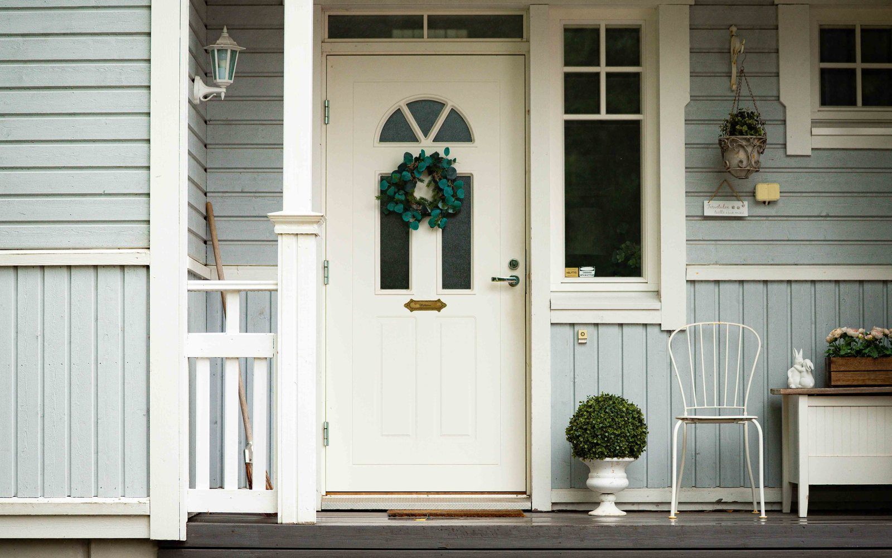
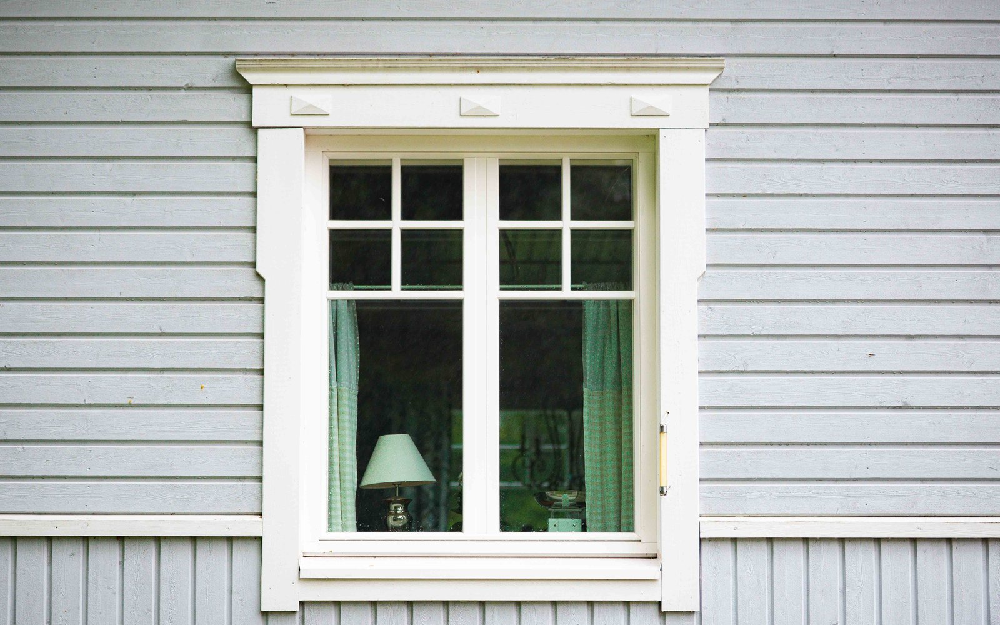
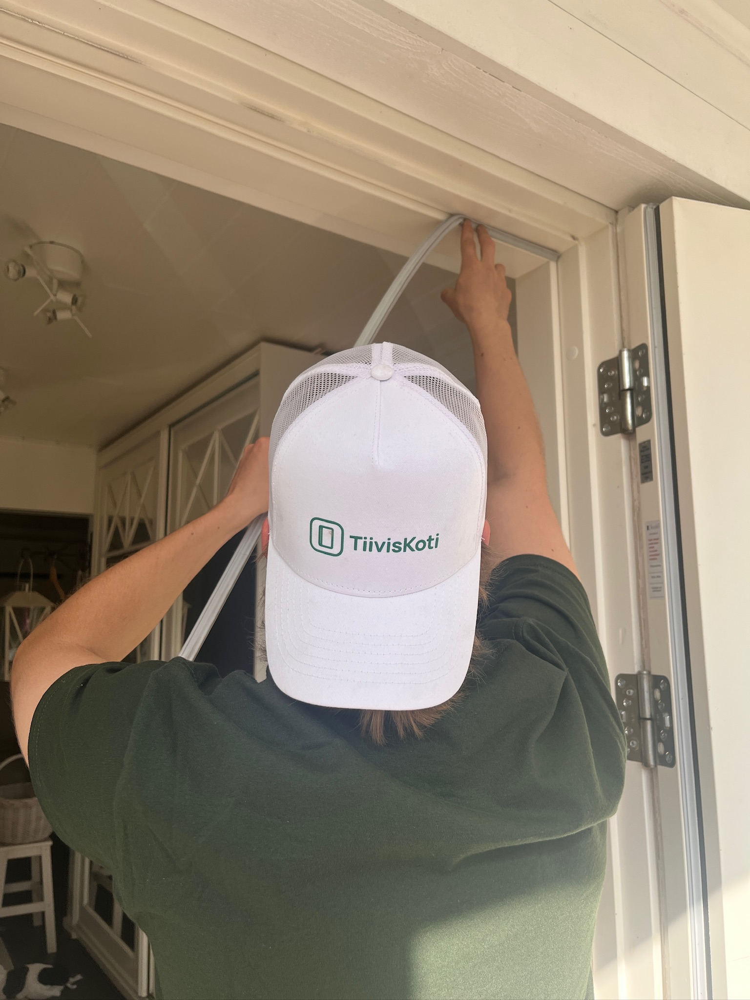
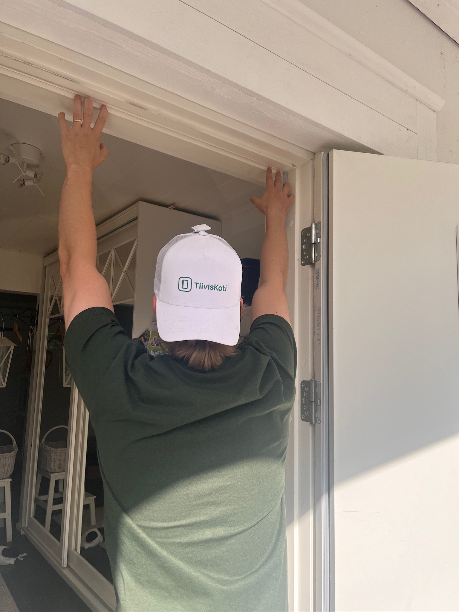

Vaihdamme ovien ja ikkunoiden tiivisteet kiinteään hintaan. Yksi käynti, ja veto on poissa.
TiivisKoti
tiiviskoti.fi045 875 5996
Tiivistevaihto · Uusimaa
Kylmä veto ei kuulu kotiin.
Vaihdamme ovien ja ikkunoiden tiivisteet kiinteään hintaan. Yksi käynti, ja veto on poissa.
10–15 %arvioitu säästö lämmityskuluissa
−40 %kotitalousvähennys työn osuudesta
TiivisKoti
tiiviskoti.fi045 875 5996
Kiinteä hinta
Näet hinnan ennen varausta.
95 €/ ikkunakarmi- ja puitetiivisteet
119 €/ ovitiivisteet, kynnyskumi ja säätö

Pienin veloitus 149 € / käynti · kotitalousvähennys −40 %
TiivisKoti
tiiviskoti.fi045 875 5996
Säästö
10–15 %
arvioitu pudotus lämmityskuluissa
Rako päästää lämmitettyä ilmaa ulos ja kylmää tilalle. Kun rako umpeutuu, sama sisälämpötila vaatii vähemmän energiaa.
Lämpökamerakartoitus veloituksetta käynnillä
Kiinteä hinta ennen työn alkua — ei yllätyslaskuja
Varaat ajan verkosta alle minuutissa
TiivisKoti
tiiviskoti.fi045 875 5996
Taloyhtiöille
Rappukäytävät kerralla kuntoon.
Ulko-ovet, rappukäytävät ja yhteistilat samalla sopimuksella — yksi urakka, yksi lasku.
KartoitusKäymme kohteet läpi ja kirjaamme, mikä vuotaa
Kirjallinen tarjousSopimushinta, jonka hallitus voi hyväksyä sellaisenaan
RaporttiMitä tehtiin ja missä — dokumentoituna hallitukselle
TiivisKoti
tiiviskoti.fi/taloyhtio045 875 5996
Kotitalousvähennys
95 €→68 €/ ikkuna
Verottaja maksaa osan puolestasi.
Kotitalousvähennys pudottaa työn osuudesta 40 %. Kerromme kiinteän hinnan sekä ennen että jälkeen vähennyksen, niin tiedät heti mistä puhutaan.
TiivisKoti
tiiviskoti.fi045 875 5996

Ajoitus
Tiivisteet kuntoon ennen pakkasia.
Vetoisen ikkunan huomaa vasta kun ulkona on −20 °C — silloin jokainen päivä maksaa. Syksyllä ehtii vielä hyvin.
TiivisKoti
tiiviskoti.fi045 875 5996
Varaus
Ei tarjouspyyntöä. Ei odottelua.
Hinta on verkossa valmiina, ja kalenterista näet vapaat ajat omalla alueellasi.
1Valitse ovet ja ikkunat
2Näet kiinteän hinnan heti
3Varaat ajan alle minuutissa
TiivisKoti
tiiviskoti.fi045 875 5996

Ennen seuraavaa talvea
Tunsitko viime talvena vetoa ikkunoista?
Ensi talvi tulee samalla tavalla. Vaihdamme ovien ja ikkunoiden tiivisteet kiinteään hintaan — yhdellä käynnillä.
10–15 %arvioitu säästö lämmityskuluissa
−40 %kotitalousvähennys työn osuudesta
TiivisKoti
tiiviskoti.fi045 875 5996

Tiivistys · Uusimaa
Yksi käynti, ovi ja ikkunat kuntoon.
Ovi ei ala käydä kevyemmin pelkällä tiivisteellä. Siksi hintaan kuuluu myös kynnyskumi ja oven käynnin säätö. Ikkunoiden helat, käyntivälykset ja kahvat hoidamme lisätyönä samalla käynnillä.
Karmi- ja puitetiivisteetKynnyskumi ulko-oviinOven käynnin säätöLämpökamerakartoitus